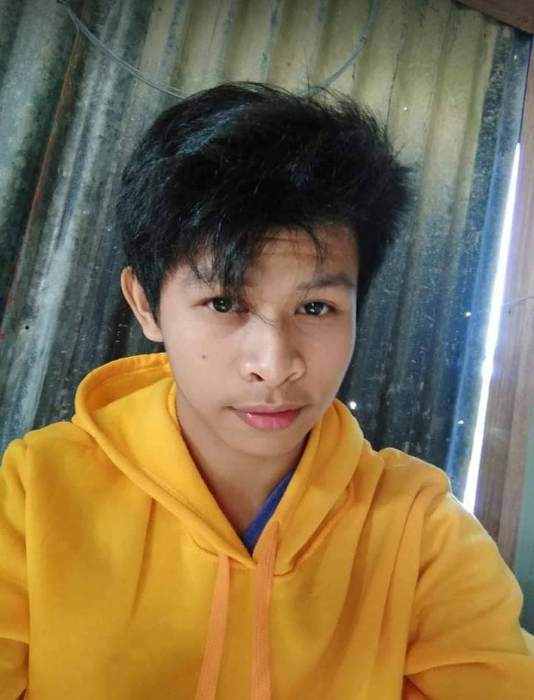

Follow Me On:

Who am I, a person has highly ambitious with big dreams for my Future they call me Jeff with the full name Jimmy J. Gutierrez Jr… the J for my middle name stands for Javonillo the maiden name of my mother. With the help of God, he was there every day, and also he was there for me before I was born on January 28, 2002. I have four siblings that I am in the middle and I am currently live in Barangay Maasin, San Clemente, Tarlac. The name of my Father is Jimmy L. Gutierrez Sr. and I am proud that his job is a construction worker in a company and my Mother is Melinda J. Gutierrez. I am currently a college student at Tarlac Agricultural University Second year of a course for Bachelor of Science in Information Technology.
The Story of my life it’s described as a simple but many kinds of challenges. Our home is the center of my comfort, love, happiness, care, and other things that can give me fulfillment in my life. This is me our god and also my Family they are my strength to face all the challenges that I encounter every day in my life. They will call the little Baguio of Tarlac the Sitio Dueg, Barangay Maasin, San Clemente, Tarlac, this place that has many memories and experiences from my childhood life. Dueg is on the top of a mountain where they have no electricity, gadgets, or any kind of technology at that time. Our house is small and simple but they have many memorable scenes that I cannot forget at this moment and also I describe our home as not concrete and other that will be called thatched roof from the time in the evening we used lamps or a “gasera” to light our home from the darkness. At that time if they have a typhoon that we must sleep in the evening but we are afraid of the typhoon because they can destroy our house and also they have many leaks in the roof so at that moment is one of the difficulties that I experience in my past. When it comes to my studies in elementary I experience becoming a vendor in the way of selling food to my co-learners and also to all the teachers in Dueg Elementary School and five pesos in a day for my things in the way of buying food for my recess time. I think that this present about my past this all my challenges are my inspirations to study well today because at a young age at that time I realized the difficulty of being a poor person but rich in love and happiness when it comes to my family. They have no classes every morning on Monday because some of the teachers are from the city so that is one of the disadvantages of my study experience at Dueg Elementary School. If I’m not mistaken in my grade four at the age of 8 to 9 years old in the day on the weekend we are waking up in the morning at the time of 3 o’clock to go to the farm for planning gingers, beans, and any kind of plants and also we are harvest to fulfill our daily needs at the time so that I hope someday I will become a success through studying hard. The sad experience in my childhood is I experienced discrimination from other people because we are poor and also they are bullying me when I’m going into the town. In addition, my biggest sad experience is other of my rich relatives in my family are the ones who ruined my family in the way they looked down on my family I hope someday my entire relative will help each other not ruin and look down.
I am a person who makes mistakes but always learns from them and I will not try to do it again. I know that I am an introverted person who is afraid to communicate with other people and I have a strong personality but am afraid of all the negative thoughts in my mind so I am trying to socialize with other people. Being an introvert I always appreciated these aspects of my personality because they have a big help to me like being observant, listening well, think before I speak so that little by little I improve my confidence to show who I am today. I prefer in a silent place alone because that’s me I feel the peace in my mind I think this is my solution or cure to all the problems, stress, and challenges that I encounter in my school experience I always do my favorite hobby reading to avoid all the cruel words from the mouth of other judgment people. I don’t have many friends I don’t have also close friends I don’t have the characteristic to approach a new person so they are a sad story to me because of lack of confidence. They are the problems that I encounter in my high school life at Bamban National High School at that time I always create a barrier between myself to all the people in the school because I was afraid to discriminate or judge the people. When it comes to things that I don’t and I want it is the favorite food that I always eat and buy is eating seafood but the food that hate the most is eating cow meat or any kinds of meat except the meat of pig and chicken. The first things on my list in travels are the Country of China when I have already a job or work because I want to experience their cultures, and traditions, learn about the history of every kingdom and visit the beautiful destination in every part of China and the most things that I want to learn are how to speak, read, write and understand their language.
It is a big yes that my life is a mixture of moments, some happy moments, and some sad moments but I always think to myself they are things that can help to become strong and I know God has a plan for me and also my family. One of my challenges is choosing a course in college because I know to myself that experiencing today even in my first year of college is very difficult because all of this is my first time experience in coding or another kind of using a Computer. This is my challenge when it comes to computers I know I have some knowledge and they have many lessons that I learned in this course but the problem is I don’t have a new laptop because my old laptop they are already some things wrong with my laptop. I always think to myself why I choose this course the side thought of my brain I follow my classmate in choosing this course but on the other side of my brain, I want the Business Administration. I didn’t regret choosing this Bachelor in Information Technology because I learned some things that can help me in the future. I know that God always has a plan and I always go in the flow to achieve my dreams with the help, of my family, all my classmates, and God, and also if I want to become what I want in the future it will start to myself.
All the people in the world they have many dreams that want to achieve like me I want to become a businessman and also to become a Soldier. Those dreams are my goal in life that I want to achieve because being a businessman is one that I want to experience in working for a big company and so on. Another is one of my best dream professions is to become a good soldier someday like my brother James Miller Gutierrez he is my inspiration because of his brave, kind, and loving characteristics. A soldier is my dream when I am a child they are my idol like my brother because I observe when I am a child they have many soldiers in my hometown before in Sitio Dueg I experience to listen to some of the soldiers at that time and what the challenges or hardship they experience or I already listen what their story before they become a soldier. In addition, I want to experience new things in training as a soldier so I join in ROTC or the Reserve Officer Training Corps.
All the moments that I experience, I always think in my mind that I want to come out of my shell to discover the new me, discover new things in the world, and remove the shy personality. Those moments have made me the person that I am today and I don’t regret anything that had happen. I always thank god that I know he will guide me in the right direction to the good destination of my dreams. Those are all the challenges in my life they are my inspiration and shield to avoid becoming a negative thinker. Every day I know God is on me so I describe myself as a strong, very determined person, I have a dream to fill the world and am willing to do all my efforts to attain those dreams of mine. Most things that I’ve learned they have a time you need the help of other people to learn also because they have things that I shouldn’t know. One of the things that I mark in my mind is that if you have a question just ask him/her and also listen they have time to listen to the opinion of other people because these are the steps to becoming a whole person and it is a big help to achieve what I want to become in the future. Today present those problems every day I realize that it is not important to show your all profile background in what your achievement it is the most important I show myself who I am and a good example to everyone.